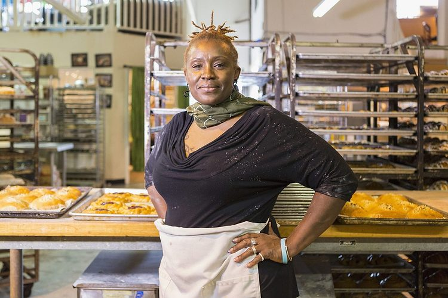

Pheladi Aphane - Founder & Head Baker
Pheladi has over 15 years of baking experience and oversees every recipe that leaves the kitchen.

Sunrise Bakery was started in 2015 by the Aphane family out of a small home kitchen. What began as weekend baking for friends and neighbours quickly grew into a much-loved local bakery. Today, we serve hundreds of customers across Polokwane every week, but we still bake every single item by hand.
To provide our community with high-quality, freshly baked goods made from honest ingredients, at a price that everyone can afford.
To become Polokwane's most trusted neighbourhood bakery, known for quality, consistency, and genuine care for our customers.
Pheladi has over 15 years of baking experience and oversees every recipe that leaves the kitchen.
Tshepho manages the day-to-day running of the bakery, from ordering ingredients to staff scheduling.
Lerato greets every customer with a smile and handles all in-store and phone enquiries.